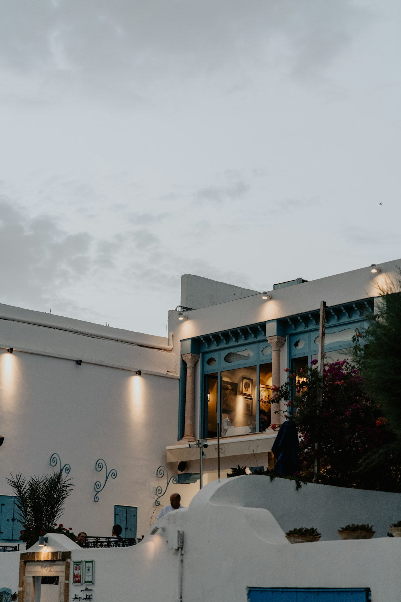
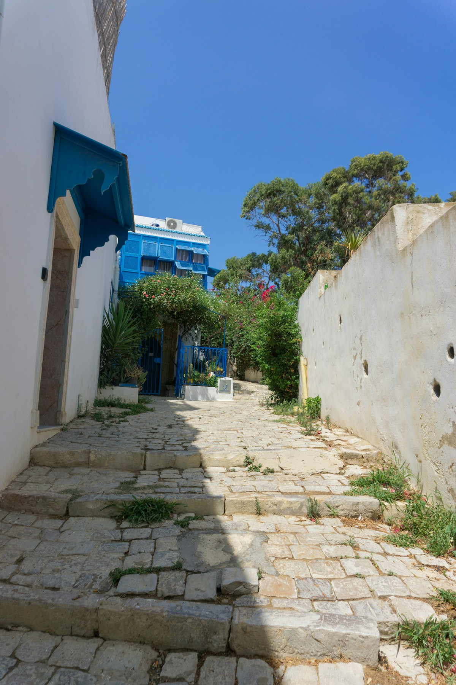
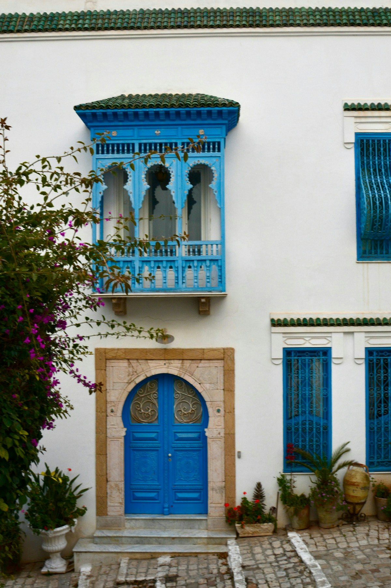
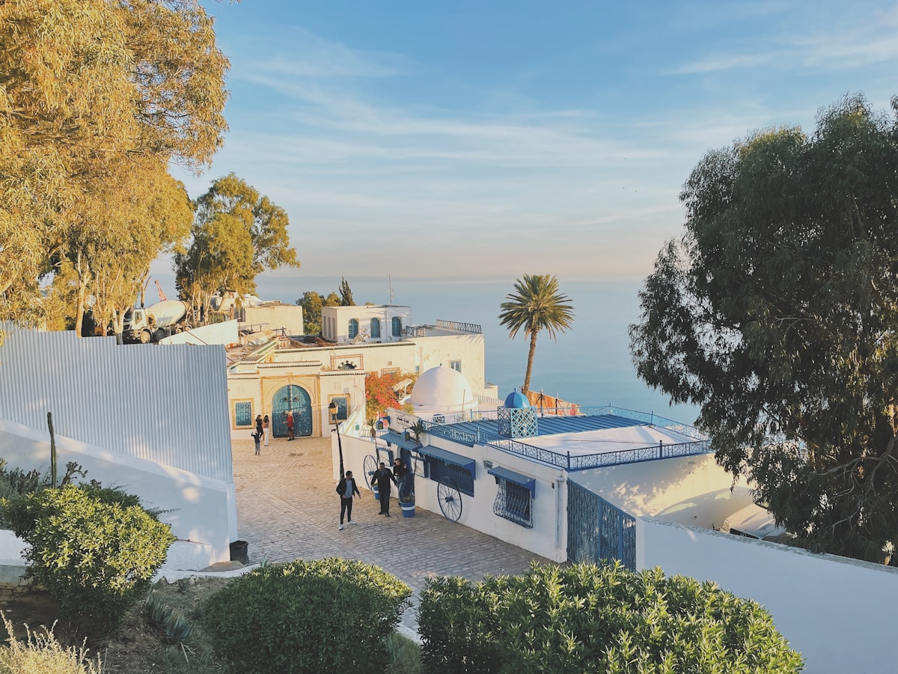
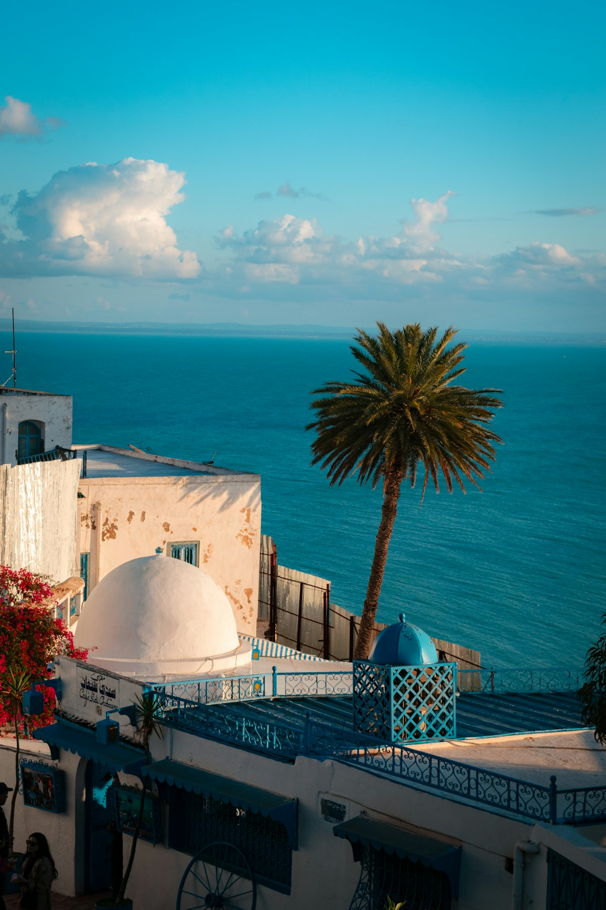
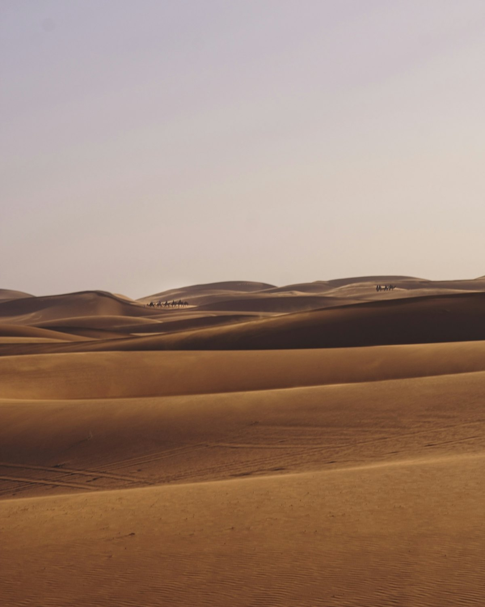
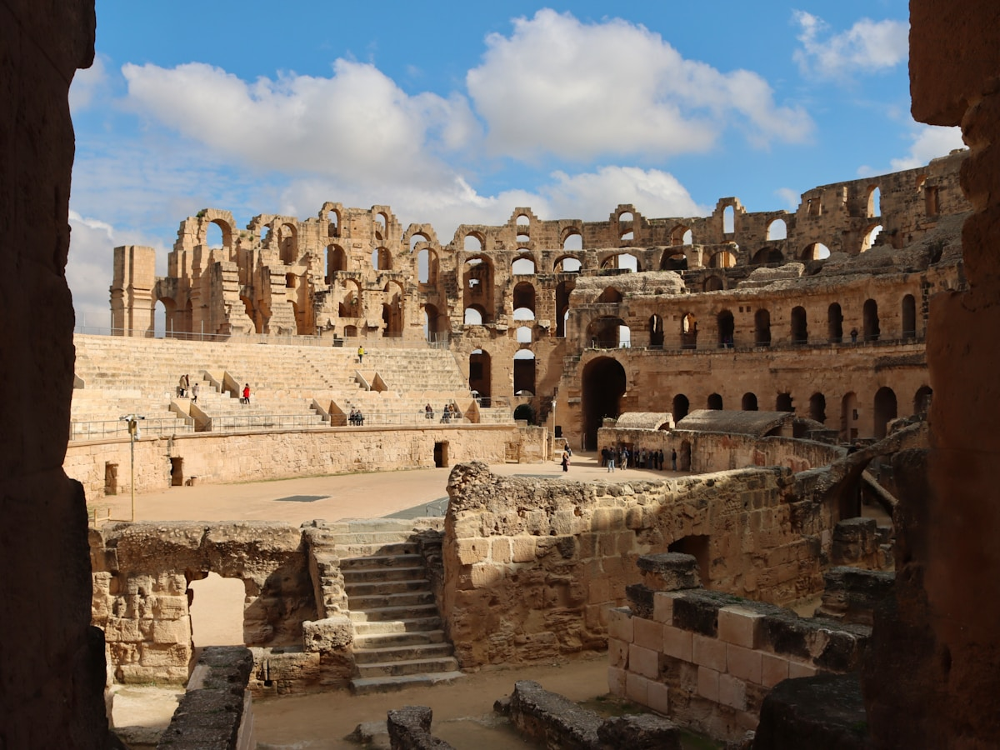
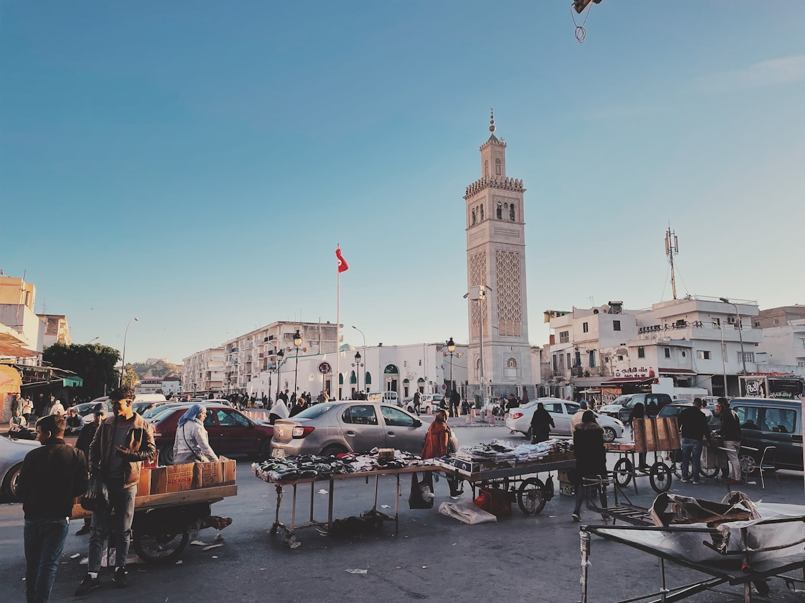

| 事项 | 结论 |
|---|---|
| 事项 | 结论 |
| 签证（最关键） | 中国护照免签 90 天，但办理登机与入境需出示与停留期相符的往返机票与已付费酒店订单（Airbnb 等民宿订单可能被拒） |
| 时差与电源 | 比北京慢 7 小时；电压 230V，插座为 C/E 型（欧标两脚圆插），需带转换头 |
| 货币 | 突尼斯第纳尔（TND），1 元 ≈ 0.4 第纳尔；现金为主，第纳尔出镜不可兑换，换汇认准银行与官方兑换点 |
| 推荐方案 | 8 天双极环线：突尼斯城+迦太基→蓝白小镇→苏塞+马赫迪耶→杜兹撒哈拉 |
| 交通方式 | 北部以SNCFT 火车衔接（突尼斯城→苏塞约 2h），南部沙漠包车/当地团进杜兹 |
| 预算（人均） | 经济 12000–18000 ／ 标准 22000–35000 ／ 舒适 45000–65000（人民币） |
| 三件提前事 | ① 备免签入境材料（往返机票+付费酒店单） ② 订火车票与沙漠团 ③ 换少量美元/欧元备用 |
以下为 8 天 7 晚的推荐节奏：按「首都古城 → 蓝白海岸 → 萨赫勒海滨 → 撒哈拉」推进。北部城市间以 SNCFT 火车为主，杜兹段换沙漠包车/当地团，全程不自驾。
| 日期 | 行程 | 过夜地 | 主题 |
|---|---|---|---|
| D1 抵突尼斯城 | 北京转机约 14h 抵达，布尔吉巴大街漫步+倒时差 | 突尼斯城 | 抵达日 |
| D2 | 迦太基遗址（布匿港/安东尼浴场）→ 巴尔多博物馆 → 麦地那老城 | 突尼斯城 | 古文明日 |
| D3 | TGM 城铁赴西迪布赛义德：蓝白小镇全日慢逛+悬崖日落 | 西迪布赛义德 | 蓝白小镇日 |
| D4 | 火车赴苏塞（约 2h）：苏塞麦地那+苏塞城堡+海滨 | 苏塞 | 萨赫勒海滨 |
| D5 | 火车赴马赫迪耶一日：老城+大清真寺+白沙滩，晚返苏塞 | 苏塞 | 马赫迪耶日 |
| D6 | 火车到加贝斯再转包车进杜兹，骆驼集市+沙漠博物馆 | 杜兹 | 撒哈拉之门 |
| D7 | 撒哈拉全日：日出骑骆驼+越野冲沙+可选温泉绿洲 | 杜兹 | 沙漠全日 |
| D8 返程 | 杜兹→托泽尔✈突尼斯城，转机✈北京 | — | 收尾 |
以下为 8 天全程的逐小时执行时间线，可当作「当天打开照着走」的清单。标注 ※ 的可选项视体力与天气取舍。
| 时间 | 事项 |
|---|---|
| 全天 | 北京✈（巴黎/伊斯坦布尔/多哈转机）✈突尼斯城，全程约 14–18h |
| 入境 | 出示往返机票+付费酒店订单（免签 90 天），换少量第纳尔（认准银行/官方兑换点） |
| 16:00–18:00 | 入住麦地那/布尔吉巴大街附近酒店，稍作休整 |
| 18:30–20:30 | 哈比卜·布尔吉巴大街（免费）：突尼斯城香榭丽舍，法院/大剧院外观，晚餐突尼斯烤鱼 |
| 时间 | 事项 |
|---|---|
| 09:00–12:00 | 迦太基遗址（联票约 8–12 第纳尔）：布匿港、安东尼浴场、圣路易教堂，1979 年世界遗产 |
| 12:00–13:30 | 午餐：La Goulette 海滨海鲜馆（当地烤鱼） |
| 14:00–17:00 | 巴尔多博物馆（约 11 第纳尔）：世界最大罗马马赛克收藏，可坐城铁往返 |
| 17:30–19:30 | 突尼斯麦地那老城（免费）：宰图纳大清真寺外观、老城集市，夜色中逛苏克 |
| 时间 | 事项 |
|---|---|
| 09:00–09:40 | TGM 城铁突尼斯城→西迪布赛义德（约 40min，票价 <2 第纳尔） |
| 10:00–13:00 | 蓝白小镇漫逛（免费，全天开放）：鹅卵石街巷、蓝门蓝窗，1915 年市政条例强制蓝白配色 |
| 13:00–14:30 | 午餐：悬崖餐厅海景（Café des Délices 一带） |
| 15:00–18:00 | 海边露台下午茶（薄荷茶+烤松子），地中海日落；可步行下山到海港看渔船 |
| 时间 | 事项 |
|---|---|
| 09:00–11:00 | SNCFT 火车突尼斯城→苏塞（约 2h，7.6–15 第纳尔，二等/一等） |
| 11:30–13:00 | 入住苏塞麦地那附近，午餐库斯库斯 |
| 13:30–17:00 | 苏塞麦地那（UNESCO，免费）+ 苏塞城堡 Ribat（约 6 第纳尔）：海滨老城+瞭望塔 |
| 18:00–20:00 | 老城夜市：烤海鲜、椰枣甜点，滨海大道散步 |
| 时间 | 事项 |
|---|---|
| 08:30–09:30 | 苏塞火车→马赫迪耶（约 1h，沿途莫纳斯提尔） |
| 10:00–12:30 | 马赫迪耶老城：白色老城、大清真寺、腓尼基/罗马遗址 |
| 12:30–14:00 | 午餐：海边烤鱼餐厅 |
| 14:00–16:30 | 马赫迪耶海滩：白沙滩+蔚蓝港湾，午后游泳/发呆 |
| 17:00–18:00 | 火车返苏塞，晚餐 |
| 时间 | 事项 |
|---|---|
| 07:30–12:00 | 苏塞火车→加贝斯（约 4h）或坐长途巴士 |
| 12:00–14:00 | 加贝斯转包车/巴士→杜兹（约 90km，1.5–2h） |
| 14:30–17:30 | 杜兹小镇：骆驼集市、撒哈拉沙漠博物馆（约 5 第纳尔） |
| 18:00 | 入住沙漠营地/酒店，撒哈拉之夜 |
| 时间 | 事项 |
|---|---|
| 06:00–08:30 | 日出骑骆驼（Grand Dune 大沙丘，约 50–80 第纳尔含向导） |
| 09:00–12:00 | 越野车冲沙/沙丘徒步（四驱车约 150–300 第纳尔/车） |
| 12:00–14:00 | 午餐：沙漠营地库斯库斯 |
| 14:30–18:00 | 可选：Ksar Ghilane 温泉绿洲（含向导包车，棕榈泉+罗马遗址） |
| 19:00 | 沙漠篝火/星空晚餐（可选露营） |
| 时间 | 事项 |
|---|---|
| 08:00–09:30 | 杜兹→托泽尔（包车约 1.5h） |
| 10:30–11:30 | 托泽尔✈突尼斯城（Tunisair Express 约 1h，提前订） |
| 13:00 | 抵达突尼斯城机场，国际航站楼 |
| 16:00–次日 | 突尼斯城✈（转机）✈北京，入境到家 |
必去（必去）/ 顺路（顺路）/ 可跳过（可跳过）。

顺路
顺路
必去
顺路
必去
顺路
必去图片为 Unsplash 主题图（西迪布赛义德蓝白小镇、迦太基地中海湾、撒哈拉沙丘、埃尔杰姆斗兽场、突尼斯麦地那等均为突尼斯实景），用于页面配图。更多免费景点：布尔吉巴大街、马赫迪耶海滩、苏塞麦地那、塔巴尔卡海滨。
点击左侧节点可在地图上定位；点击地图 marker 会高亮对应节点。坐标为 WGS-84 转 GCJ-02 纠偏后标注。
以下为单人、不含购物的估算，人民币计价；出发地基准北京。汇率按 1 元 ≈ 0.4 突尼斯第纳尔、1 美元 ≈ 7.2 元估算。北京无直航，往返转机按淡季 5000–8000 元计，旺季（10 月–次年 4 月）上浮 1500–3000。
| 项目 | 经济（12000–18000） | 标准（22000–35000） | 舒适（45000–65000） |
|---|---|---|---|
| 往返机票 | 转机往返 5000–8000（淡季促销） | 转机直挂 9000–13000 | 含内陆段/灵活票 18000–25000 |
| 住宿（7 晚） | 民宿/青旅 1000–1800 | 中档酒店 3000–5000 | 海滨度假村 10000–16000 |
| 交通（境内） | 火车+巴士 1500–2500 | 火车+沙漠包车 3000–5000 | 全包车+内陆航班 7000–10000 |
| 门票 | 基础门票约 300–500 | 含巴尔多/斗兽场 600–1000 | 含沙漠活动 1500–2500 |
| 餐饮（8 天） | 本地馆子+街头 800–1200 | 正常餐厅 2000–3000 | 海景餐厅+全包 5000–8000 |
杜兹加到 2 晚：第一晚沙漠营地露营（篝火+星空），第二晚 Ksar Ghilane 温泉绿洲过夜；或改走西部线——突尼斯城✈托泽尔，玩托泽尔棕榈谷+星球大战取景地（马特马他穴居人小镇），再沙漠越野回杜兹。撒哈拉活动以当地团为核心，旺季提前 1–2 周订。
带娃推荐：迦太基减半、加哈马马特（Hammamet）海滨度假 1–2 天，海滩+水上乐园更轻松；蓝色小镇与麦地那步行多，推婴儿车不便，建议背带。突尼斯夏天炎热，午后安排室内（博物馆/海边）避暑。
| 方式 | 时长 | 参考价 | 备注 |
|---|---|---|---|
| 转机（唯一） | 北京→突尼斯城约 14–18h | 往返 5000–11000 元 | 经巴黎/伊斯坦布尔/多哈/迪拜，行李直挂选联程票 |
| 直飞 | — | — | 中突暂无直航 |
| 国际铁路 | — | — | 无陆路，只能飞机/游轮 |
| 区域 | 价格/晚 | 优点 | 短板 |
|---|---|---|---|
| 突尼斯城·麦地那 | 经济 150–350 / 标准 400–700 | 老城氛围，清真寺步行 | 巷窄拖行李累 |
| 突尼斯城·布尔吉巴大街 | 标准 400–800 | 交通枢纽，餐饮多 | 街面嘈杂 |
| 西迪布赛义德 | 民宿 300–600 / 精品 800–1500 | 蓝白小镇过夜，日落加分 | 选择少，提前订 |
| 苏塞·老城 | 经济 150–300 / 标准 400–700 | 地道，火车站近 | 夜间较安静 |
| 马赫迪耶·海滨 | 经济 200–350 / 标准 500–900 | 白沙滩度假，度假村多 | 老城住宿选择少 |
| 杜兹·沙漠营区 | 营地 300–800 / 四星 1000–2500 | 沙漠日出星空 | 旺季露营紧张 |